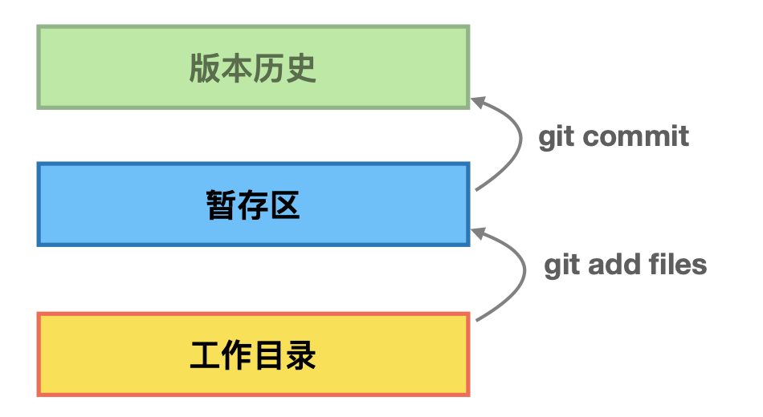

最近在学习Git命令，这里记录了学习过程中的一些基本命令，2020.02.24更新
Git基本命令
Git 下载
Git 配置
基本配置
1
2git config --global user.name 'xxx'
git config --global user.email 'xxx'不同权限配置
1
2
3
4git config --local # 针对某仓库配置
git config --add --local user.name 'xxx' # 增加一个新的用户名
git config --global # 针对当前用户所有仓库，最常用
git config --system # 对系统中所有用户都有效，基本不用当前存在用户信息
1
2
3
4# 分别查看不同水平上的配置情况
git config --list --local # 需要在具体仓库中使用
git config --list --global
git config --list --system
建Git仓库
建仓库之前已有代码
1
2cd 目录
git init # 构建仓库建仓库之前无代码
1
2
3cd 目录
git init your_project # 当前目录下构建仓库
cd your_project # 目录下只有.git文件使用commit
1
2
3
4
5
6> readme # 当前文件夹下创建readme
git status # 注意当前还未别git管控，会出现"Untracked files:"提示
git add readme # 通过add命令实现了对文件readme的管控，及加入暂存区可以使用git status查看
git add -u # 将所有的都直接update
git commit -m'Add readme' # 添加对本次操作的记录
git log # 可以查看对应的修改日志详情
git 暂存区工作区
工作目录，暂存区，版本历史
1
2
3
4
5
6# 将"工作目录"下的文件加入"暂存区"。处于暂存区的文件可以被覆盖。
# git add 后面可以加多个文件及文件夹，空格隔开即可
git add files
git add -u # 当对本地文件进行修改更新后，重新对所有已经加入暂存区的文件进行更新
# 将暂存区的文件作为历史版本提交
git commit -m'xxx'暂存区的意义
关于暂存区，有的人可能有以下疑问，一般情况下，我有什么代码上的改动，在本地实现完了之后，直接提交不就得了，问啥多此一举把在本地也能修改操作的文件提交到暂存区上？
查阅相关资料，其实涉及到原子性提交这么一个问题，简单来说，原子性提交就是一次提交修改的内容，要么全都成功，要么全都失败，好处在于，将项目还原到某个时间点的版本十分容易。
那么对于命令行的git来说，为了在命令行状态下实现这一操作，即出于某个目的对文件进行多次修改，并最终将对此修改一次性提交（防止每次修改都提交，难以回到之前某个稳定的版本），发明了”暂存区”这一概念。暂存区相当于一个对修改文件打包的作用，方便用户一次性提交修改内容。
文件夹重命名
麻烦的做法
1
2
3
4mv old new # 在本地修改文件
git add new # 将新文件加入暂存区
git rm old # 将旧文件从暂存区删除
git reset --hard # ！！！这个命令是将之前存到暂存区的修改文件全部抹去的操作，不会影响git历史。小心使用！！！简单的做法
1
2
3
4
5git mv old new # 直接将暂存区中的文件进行修改
git commit m'xxx' # 提交
git commit -am 'xxx' # 也是提交，但是是越过暂存区，直接将当前目录下的变更进行commit，一般不推荐，如果你确定修改之后的内容不存在bug，也可以使用
git status # 查看暂存区状态
git log # 查看commit提交历史
查看git提交记录
单分支
1
2git log --oneline # 简洁的查看git提交的变更历史，其中最近提交对应较靠上行，较早提交对应较靠下行
git log -n4 --oneline # 查看最近的4条commit记录多分支
1
2
3
4
5
6
7git branch -av # 本地有多少分支
git checkout -b temp xxxx # 创建并切换到新分支新分支，名为temp。其中xxxx为对应以往commit的哈希值，可以通过git log查看，除此之外，xxxx还可以是某个branch名称
git checkout temp # 切换到某分支
git commit -am'xxx' # 将工作区的文件直接加入版本库中
git log --all graph # 查看多个分支的版本演进情况
git log --oneline -n4 --graph temp # 查看temp分支对应的版本演进历史
git help --web log # 查看git log详细命令情况（网页端）图形界面演示版本历史
1
gitk --all # 可以通过view new一个all ref的可视化界面，方便查看。其中头指针指向的branch为黄色（当前branch）。蓝色点代表commit对象，绿色框代表branch，黄色框是tag
解密.git文件
1 | # .git 是一个文件夹里面存在相应的仓库信息 |
Git 对象彼此关系
- commit是一个提交对象，里面包含tree，parent，author，commiter信息
- tree是包含在commit里面的，是每次提交的时候对应的当前时刻的快照，对应了文件夹（tree类型），文件（blob）
- blob是文件类型，每个blob对象跟文件名不相关，即，只要文件内容相同，blob的哈希值就是唯一的，使得存储简洁
分离头指针
- 一句话总结：分离头指针就是变更没有基于branch做，之后的变更可能会被清除。
1
2
3
4
5git checkout xxx # 其中xxx是一个commit对应的哈希值，而非相应的branch。会有"detached HEAD"的字眼，表明现在正处于分离头指针的状态，工作在一个没有分支的情况下。这种状态下，当切换到branch的时候，很可能当前状态下的commit全都失效，因为commit没有和branch挂钩。
echo xxx>tmp.txt
git commit -am'Add tmp file' # 当前工作目录修改后的结构进行提交
git log # 查看的commit历史的时候，第一行显示的内容里HEAD并没有指向任何branch，说明确实是基于某commit进行修改的
git branch xxxname xxx # 为了保留之前基于commit进行的变更，需要对其构建branch，xxx是对于commit的哈希值，xxxname是构建branch名称
HEAD和branch
- HEAD可以指定到branch中最新一次的commit对象，也可以指向分离头指针中的某个commit，因此，无论如何，HEAD都是指向commit对象的
- HEAD可以作为当前指定的commit
1
git diff HEAD HEAD^ # 该命令表示查看最新提交以及最新一次提交之前的一次提交之间的差别。其中HEAD是专有词汇，表征当前commit，HEAD^1表征当前commit对应的父节点，进一步的，HEAD^^表征当前commit父节点的父节点。HEAD^^等同于HEAD~2
Git 常用场景命令
删除branch
1 | git branch -av # 查看现有所有分支 |
修改commit的message
最近一次提交message修改
1
2git log -1 # 和-n1一样，查看最近的commit
git commit --amend # 修改最近一次的commit提交内容之前提交的message修改
1
2
3
4
5
6
7
8# a. 进入修改界面
git rebase -i xxx # 交互式的修改，xxx为想要修改的message对应的commit的父节点的哈希值。
# b. 在修改界面指定修改策略
# 修改策略在界面里会提示，一般来说，pick是直接挑出，对于想要修改的地方，将pick改为r或者reword，使用:wq!保存。
# c. 修改message内容
# 修改内容，:wq!保存即可
注意：rebase是在本地进行修改时的操作，如果对group项目上进行变基则不可以这样使用
commit合并
基本假设：之前做过的commit变更，后续发现其实是为一个功能服务的，因此想要将之前多个commit进行合并
- 对于连续的commit合并
1
2
3
4
5
6# a. 进入修改界面
git rebase -i xxx # xxx为所有想合并的commit对应的第一个公共父节点的哈希值。
# b.写入修改策略
# 在想要合并的commit之前，写入squash或者s（除第一个外）
# c.写入合并理由
# 在第一行注释下面写入合并理由
注意：这里可能有个问题，如果合并的commit从第一个开始咋办？第一个commit没有父节点啊？注意，这时就需要在rebase的交互界面中加入一个pick 后面跟相应的第一个commit的哈希值，即可。
- 对于不连续commit合并
1
2
3
4
5
6# a. 进入修改界面
git rebase -i xxx
# b.写入修改策略
# 区别在于在rebase交互文件中，修改策略的时候将不连续的commit放在一起，并使用squash命令进行合并即可
# c.写入合并理由
git rebase --continue # 在此命令下弹出的文件中写下修改信息
比较工作区/暂存区/commit之间内容差别
比较commit之间内容差别
1
2
3git diff HEAD HEAD^ # 最近一次提交与其之前父节点之间差别。HEAD^^表征当前commit父节点的父节点。HEAD^^等同于HEAD~2。
git diff temp master # 查看temp和master两个分支之间的差别，其实对应于各自的分支最新的commit。所以使用对应commit的哈希值也是可以的
git diff temp master -- xxx # 查看两个分支之间xxx文件的差异。temp和master分支顺序先后是有影响的，master在后表明，增加和减少都是对于master来说的比较暂存区以及HEAD内容
目的：比较暂存区和最近commit的内容，方便确认修改内容，正确提交1
git diff --cached # 查看暂存区和HEAD之间的差异
比较工作区与暂存区内容差别
1
2git diff # 直接就可以比较，但是是对所有文件进行比较的
git diff -- xxx1 xxx2 # 只比较某一个文件，xxx1、xxx2为文件名，--和文件名之间有空格，可比较一个文件，也可比较多个文件
将暂存区内容恢复
目的：目前工作区内容可能优于暂存区内容，因此想将暂存区内容扔掉，恢复到之前commit的状态。1
2git reset HEAD # 取消所有暂存区的内容，会提示"Unstageed change "
git reset HEAD -- xxx # 部分文件恢复，xxx为想恢复成commit的文件，可以为多个文件
消除最近几次提交
目的：工作区暂存区都退回之前的commit操作。比如说我在本地删除了一个文件，但是我想要恢复回来，commit里面是有相应的记录的。1
2
3
4
5
6
7
8# 从工作区暂存区删除xxx文件，方法1
git rm -f xxx # 删除暂存区以及工作区对应的xxx文件，注意此时还没更新commit
# 从工作区暂存区删除xxx文件，方法2
rm -rf xxx # 本地工作目录删除xxx
git rm xxx # 暂存区删除xxx文件
# 恢复到删除xxx文件
git reset --hard xxx # 慎用，xxx为想退回的commit对应的哈希值。当前应为HEAD，即commit最近一次提交对应的哈希值，哈希值通过git log查看
当前任务中加塞
场景：当前正在某分支上进行项目的推进，但是突然测试那边说出了bug需要紧急修复，因此需要先把手头上的工作放下存起来，修复bug之后，在回归到原来工作上。相当于不破坏暂存区
常用场景1
2
3
4git stash # 当前进度存起来（保存暂存的和没有暂存的或没有记录的），此时使用git status时会发现当前暂存区是干净的了，可以完成紧急任务了，git diff看工作目录暂存区区别。
git stash list # 可以查看相应存储堆栈
git stash apply/pop # 完成紧急任务之后，需要回到之前相应的任务继续操作。注意apply在弹出之后，stash的list中不会删除，可以反复弹出。
指定不需要Git管控的文件
- 在项目所在目录下加入一个.gitignore文件，在里面加入.jar，则说明对于所有的jar后缀文件或者文件夹，git全都不管控（不管控的意思是，如果该类型文件变更了，git status不会warning）。这里需要注意，.jar/和*.jar有区别，前者表明只对该后缀文件夹不管控，jar后缀文件依然管控，后者表明无论该后缀文件夹还是文件都不管控。可以用git status查看。
- 注意对于不同框架和语言的.gitignore在github上是有相应的参看文件的。地址
Git 备份
说明：主要有本地协议，http/https协议（需要用户名密码），ssh协议（需要公司密钥）
- 本地备份
1
2
3
4
5
6
7
8
9
10
11mkdir back-up # 建一个备份点
cd back-up
git clone --bare xxxpath/.git ya.git # bare是不带工作区的裸仓库，该克隆协议为哑协议，慢，不带进度条
git clone --bare file://xxxpath/.git ya.git # 智能协议，有进度条，快
# 同步备份
git remote -v # 查看备份信息，remote相当于桥梁
git remote add zhineng file://path/zhineng.git # 创建远端备份
git push --set-upstream zhineng # 在当前工作目录上变更的信息，同步到远端备份
git clone # 注意git clone相当于建立一个origin的remote，同时不必init
配置公司钥
目的：方便本地仓库传到github托管平台的repo上面去(需要在github上先建一个repo)
前提是去Github上进行注册
创建github钥的地址1 地址2
本地仓库同步到github
1 | git remote add github git@github.com:WenchaoXiu/git_learning.git # 新增一个远端站点，使用github代替远端站点git@github.com:WenchaoXiu/git_learning.git的地址 |
相同分支不同人修改不同文件/修改相同文件不同部分
准备一个账户
1
2
3
4
5
6git clone xxx name02 # 将xxx地址的git下载下来，并重新命名为name02文件夹
git config --add --local user.name 'xxx' # 将项目下的名称修改为自己的
git config --add --local user.email 'xxx' # 将项目下的邮箱修改为自己的
git config --local -l # 查看配置信息
git checkout -b xxxx/xxx original/xxx/xxx # 基于远端分支构建本地的分支，并切换过去
git push 本地分支:远端分支 # 将本地修改之后的分支传上去两人修改不同步
1
2
3
4
5git push github/origin # 失败
git fetch github # 远端下载
git branch -av # 查看变化
git merge github/xxx/xxx # 合并远端与当前修改，或用rebase
git push github # 因为merge之后是fast forward，所以commit顺利
修改相同文件的差不多相同位置
场景：两个人修改同一文件同一位置，一个人提交，另一个人提交报错1
2
3git pull # 拉下来远端的
git merge xxx # 发现没报错
vi xxxfile # 修改冲突文件，会有>>>>>符号，手动修改之后，再add commit push即可
两人一个修改文件名，一个基于原文件名进行内容修改
一人修改文件名
1
2
3git mv xxx xxx01 # 变更文件名
git commit -am'mv file name' # 提交
git push github # 远端更新一人修改内容
1
2
3
4
5vi xxx # 修改文件
git commit -am'change content' # 变更内容
git push # 失败
git pull github # 拉下来，直接就可以识别
git push # 成功
两人都修改文件名
1 | git push # 报错 |
两台机器上的提交冲突
场景：回到学校，同事说项目某部分有bug，本地修改提交了。回公司之后忘了下最新的代码，直接在原来电脑的基础上修改，进行push的时候报错。1
2
3
4
5
6
7
8git stash # 暂存起来电脑上已经修改的内容
git fetch xxx # 远端内容下载到本地
git branch -av # 查看有冲突的branch
git merge xxx # 将本地即远端有冲突的内容进行合并，此时远端与本地一致
git stash pop # 弹出之前在公司电脑上修改的代码，会合并上一步与远端一致的代码以及在公司电脑上修改的代码。注意可能会有冲突。
git status # 查看是否两者有冲突，如果有，手动改
git add/commmit # 进行add/commit
git push # 同步到远端
GitHub项目搜索
- 在搜索框输入自己想要的内容，之后加入”in:readme”，会在readme中进行搜索，效率更高
- 对于star数进行限制，”starts:>1000”，即star数大于1000的项目
- ‘after_script:’+’stage: deploy’ filename:.gitlab-ci.yml # 搜索.gitlab-ci.yml文件，且文件中包含after_script:以及stage: deploy内容
- code和repo搜索不能同时进行